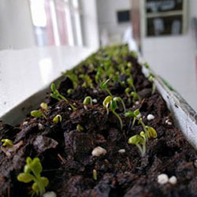
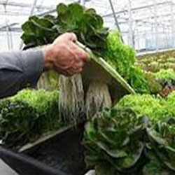

Agricultura orgánica e hipodrónica
Somos un centro de producción y capacitación en temas de agricultura orgánica e hidropónica. Y aún se encuentra en proyecto la crianza de la especie continental llamada tilapia.

Agricultura orgánica

Agricultura hipodrónica

Agricultura hipodrónica